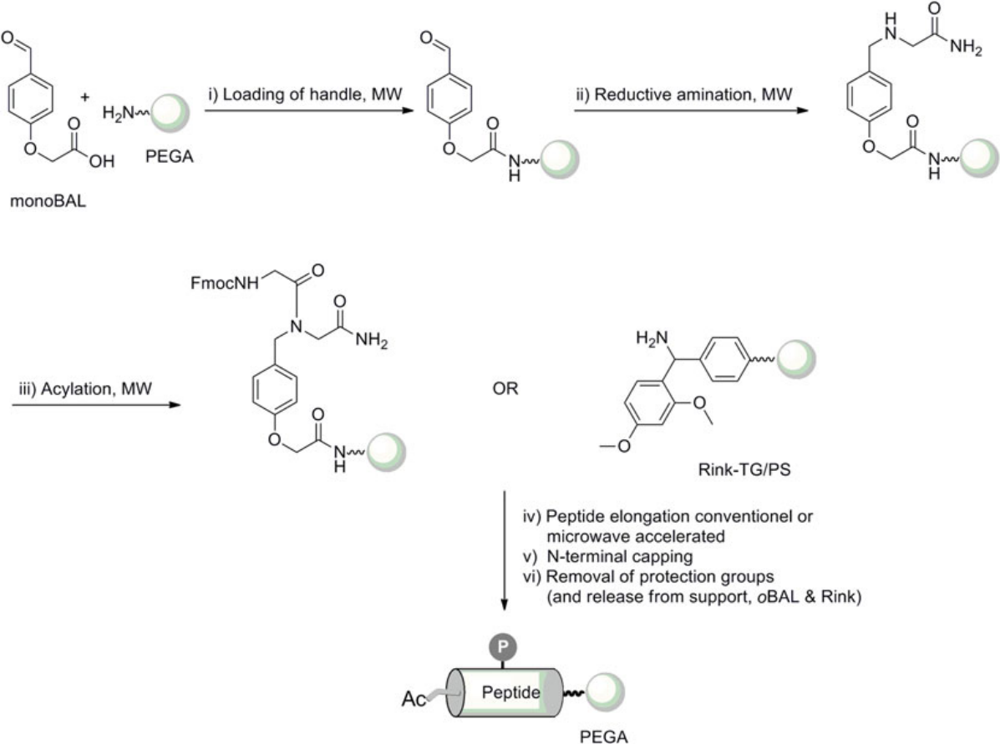
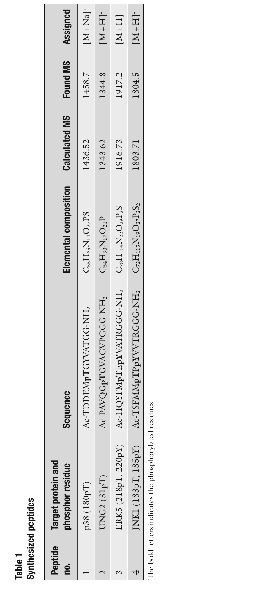

Chapter 13
Solid-Phase Synthesis of Phosphopeptides
磷酸肽的固相合成
Kim B. Højlys-Larsen and Knud J. Jensen
Source: Methods in Molecular Biology, vol. 1047 (2013), Springer
摘要 (Abstract)
磷酸肽（Phosphopeptides）通常通过在肽合成过程中引入合适的、受保护的磷酸氨基酸衍生物（protected phosphoamino acid derivatives），并采用常规偶联协议（routine coupling protocols）来制备。Fmoc-SPPS（Fmoc-based solid-phase peptide synthesis）合成磷酸化肽的可行性，在很大程度上得益于磷酸基团单苄基保护基（monobenzyl protecting group）的引入。这一保护基策略最大限度地减少了磷酸基团的β-elimination（β-消除）现象，从而使基于Fmoc策略的磷酸肽合成成为首选方法。
本章描述的策略是：将磷酸肽连接到固相载体 PEGA 上，通过 backbone amide linker (BAL)（骨架酰胺连接臂）型连接臂实现。该连接臂允许在不去除固相支持体上磷酸肽的条件下脱除侧链保护基，从而能够进行基于固相的 pull-down（ pull-down 拉下实验）反应和多肽-蛋白质相互作用研究。
关键词：Phosphopeptide（磷酸肽）、Monobenzyl protection（单苄基保护）、Fmoc-based protocol（基于Fmoc的方案）、PEGA、Backbone amide linker（骨架酰胺连接臂）
1. 引言 (Introduction)
1.1 翻译后修饰与磷酸化的生物学意义
翻译后修饰（Posttranslational modification, PTM），如磷酸化（phosphorylation）、糖基化（glycosylation）或乙酰化（acetylation），通常控制着蛋白质处于活性还是非活性形式。磷酸化以不同的形式存在——不仅 Ser（丝氨酸）和 Thr（苏氨酸）可被侧链磷酸化，Tyr（酪氨酸）和 His（组氨酸）同样可以被磷酸化。
蛋白质磷酸化改变蛋白质的构象（conformation），以及其活性（activity）、结合特性（binding properties）和亚细胞分布（subcellular distribution）。磷酸化由蛋白质激酶（protein kinases）和蛋白质磷酸酶（protein phosphatases）之间的相互作用所调控。这一过程控制着许多不同的生物学过程，如代谢（metabolism）、膜运输（membrane transport）、基因转录（gene transcription）和激酶级联激活（kinase cascade activation）[1]。
1.2 磷酸化研究的规模与重要性
人类基因组包含 518 个蛋白质激酶结构域（protein kinase domains），约占整个人类基因组的 2% [2]，以及大约 204 个磷酸酶 [3]。以"protein phosphorylation"为关键词在 PubMed 中检索，可获得超过 186,645 条引用 [4]；而以"phosphopeptide synthesis"检索，仅获得 4,611 条结果（其中 130 篇为综述）。这表明磷酸化研究是一个极其活跃的领域，而磷酸肽合成方法学的发展仍有广阔空间。
1.3 磷酸肽的应用
磷酸肽是研究蛋白质-蛋白质相互作用（protein-protein interactions）、蛋白质磷酸化和去磷酸化（dephosphorylation）的重要工具 [8]。使用磷酸肽来产生针对蛋白质中特定基序（defined motives）的抗体，可以提供关于磷酸化状态的信息，从而推导蛋白质在细胞中所发挥的作用 [9-11]。
作者自身在 Ser/Thr-磷酸化肽方面的研究集中于：
(1) 磷酸酶序列特异性的研究（study of sequence specificity of phosphatases）[12, 13]；
(2) 磷酸肽结合蛋白的亲和性质研究（affinity properties of phosphopeptide binding proteins）[14, 15]。
1.4 本章范围
本章重点关注 Ser/Thr 磷酸化。Tyr 磷酸化的内容参见 Ottinger et al. [15, 16]。
本章描述了一种新颖且通用的磷酸肽固相合成方法学，特点是直接引入 Nα-Fmoc-phospho-L-Tyr（具有未保护侧链的磷酸酪氨酸）。该技术避免了形成含有 Tyr H-phosphonate（酪氨酸 H-膦酸酯）的肽副产物。
▸ 要点总结：磷酸化是最重要的翻译后修饰之一，人类基因组有518个激酶和约204个磷酸酶。磷酸肽是研究磷酸化相关生物学过程的核心工具。本章聚焦 Ser/Thr 磷酸肽的 Fmoc-SPPS 合成方法。
1.5 磷酸肽合成的两种通用策略
磷酸肽可以通过两种通用方法合成：全局磷酸化（global phosphorylation）和 构建块方法（building block approach）。
1.5.1 全局磷酸化 (Global Phosphorylation / Post-Assembly Phosphorylation)
全局磷酸化（即组装后磷酸化）的流程：首先合成一条肽链，其中 Ser、Thr 或 Tyr 不加侧链保护基。肽链合成完成后，再使用 phosphorochloridate（磷酰氯试剂）或 phosphoramidite（亚磷酰胺试剂）处理肽链进行磷酸化，随后进行氧化（oxidation）。
1.5.2 构建块方法 (Building Block Approach)
在更为方便的构建块方法中，磷酸基团在肽合成之前就被引入到 Nα-protected（Nα-保护的）氨基酸中。然后将该磷酸氨基酸构建块（phosphoamino acid building block）嵌入到正在生长的肽链中 [8]。
▸ 要点总结：两种磷酸肽合成策略：(1) 全局磷酸化——先合成肽链，再做磷酸化修饰；(2) 构建块方法——预先制备磷酸氨基酸衍生物，直接在SPPS中引入。构建块方法更为方便可靠。
1.6 历史背景与β-消除问题
1990年代中期之前，大多数磷酸肽通过 Boc-SPPS [17, 18] 合成，或通过肽链组装后用磷酰氯或亚磷酰胺处理进行全局磷酸化，再氧化完成 [19-21]。
使用 Fmoc-SPPS 合成磷酸肽面临的一个挑战是：使用双保护的 Ser 磷酸酯（bis-protected Ser phosphate）时，在 Fmoc 脱保护步骤中使用哌啶（piperidine）处理会导致磷酸基团的部分 β-消除（β-elimination），造成磷酸基团丢失并形成相应的 dehydroalanine（脱氢丙氨酸）残基。
磷酸基团 monobenzyl protecting group（单苄基保护基）的引入 [22, 23] 最大限度地减少了 β-elimination，从而推动了 Fmoc-SPPS 在磷酸肽合成中的应用。
Fmoc-SPPS 通过在肽合成中引入受保护的磷酸氨基酸衍生物，采用常规 HBTU-HOBt 偶联协议来完成。肽链组装完成后，使用标准的 TFA/scavenger（TFA/清除剂）混合物进行肽的释放和同步脱保护。这使得磷酸肽的制备相当可靠。
▸ 要点总结：关键突破：双保护Ser磷酸酯在哌啶脱Fmoc时会发生β-消除，丢失磷酸基团并生成脱氢丙氨酸。单苄基保护基的引入最大限度减少了β-消除，使Fmoc-SPPS成为磷酸肽合成的首选策略。
1.7 树脂结合磷酸肽的制备与应用
本章的第二个重点是制备 resin-bound phosphopeptides（树脂结合的磷酸肽），可用于亲和 pull-down（affinity pull-down）实验。
1.7.1 连接臂 (Linker/Handle) 的选择
在珠筛选（on-bead screenings）需要使用一种酸稳定的连接臂（acid stable handle），使得在去除侧链保护基后，磷酸肽仍然结合在固相支持体上。
一种此类连接臂是 4-formylphenoxyacetic acid（4-甲酰基苯氧基乙酸，或称 "monoBAL"），当需要分析或质量控制时，需要使用 trifluoromethane sulfonic acid (TFMSA)（三氟甲磺酸）来释放肽 [24, 25]，参见 Chapter 9。不过，其他连接臂如 HMBA handle 也可以使用。
1.7.2 PEGA 树脂
另一个重要因素是聚合支持体（polymeric support）的性质，因为树脂必须与生物检测兼容。一种有用的支持体是由 Meldal 开发的 poly[acryloyl-bis(aminopropyl)polyethylene glycol]（PEGA）树脂 [26, 27]。
PEGA 树脂的优点：(1) 在水相系统和大多数肽合成所用的有机溶剂中均具有优异的溶胀性能（excellent swelling）；(2) 分子量截止值（molecular cutoff）约为 35–70 kDa。
1.7.3 溶液相检测的常规树脂选择
另一方面，如果磷酸肽打算用于溶液相检测（solution-phase assays），合成可以在标准树脂上使用常见连接臂进行。这包括在聚苯乙烯（polystyrene, PS）、TentaGel (TG) 或 ChemMatrix 支持体上的 Rink amide 或 Wang-type 连接臂。
肽链组装完成后，使用含 TFA 的混合液（TFA-containing cocktails）处理，将肽从固相支持体上释放，同时去除酸敏感的侧链保护基。使用这些条件，已经建立了稳健的磷酸肽快速高效合成方案。
本章描述的方案使用 monoBAL 连接臂在 PEGA 上进行 Fmoc-SPPS，制备用于树脂上展示（on-resin display）的磷酸肽，例如用于 pull-down 蛋白质组学。然而，该方案也可用于磷酸肽的常规 Fmoc-SPPS 合成——只需使用 TFA 可裂解的连接臂和相应的第一个氨基酸锚定化学。
▸ 要点总结：树脂结合磷酸肽的关键：(1) 使用酸稳定的 monoBAL 连接臂，脱侧链保护基后肽仍留在树脂上；(2) PEGA树脂在水相和有机相中均可溶胀，分子截止量35-70 kDa；(3) 如需溶液相实验，可改用Rink amide/Wang连接臂+PS/TG/ChemMatrix树脂。
2. 材料 (Materials)
2.1 树脂 (Resins)
用于肽合成的树脂：Poly[acryloyl-bis(aminopropyl)polyethylene glycol]（PEGA）[26, 27]。PEGA 树脂购自 Polymer Laboratories Ltd（现 Agilent，英国）。
2.2 构建块 (Building Blocks)
氨基酸衍生物来自 Iris Biotech 或 Novabiochem。其中磷酸氨基酸衍生物：
• Fmoc-Ser[PO(OBn)OH]-OH —— 单苄基保护的磷酸丝氨酸构建块
• Fmoc-Thr[PO(OBn)OH]-OH —— 单苄基保护的磷酸苏氨酸构建块
• Fmoc-Tyr[PO(OBn)OH]-OH —— 单苄基保护的磷酸酪氨酸构建块
以上磷酸氨基酸衍生物均购自 Bachem（瑞士）。
氨基酸通常为 Nα-Fmoc 保护，并使用以下侧链保护基：
• Ser 和 Tyr：tert-butyl (tBu)（叔丁基）
• Asn：trityl (Trt)（三苯甲基）
• Arg：2,2,4,6,7-pentamethyl-dihydrobenzofuran-5-sulfonyl (Pbf)
2.3 偶联试剂 (Coupling Reagents)
• HBTU：N-[(1H-benzotriazol-1-yl)(dimethylamino)methylene]-N-methylmethanaminium hexafluorophosphate N-oxide
• DIC：diisopropylcarbodiimide（二异丙基碳二亚胺）
• HOBt：1-hydroxybenzotriazole（1-羟基苯并三唑）
• DIEA：N,N-diisopropylethylamine（N,N-二异丙基乙胺）
以上试剂来自 Iris Biotech GmbH 或 Novabiochem。所有其他化学品购自 Sigma-Aldrich。
2.4 仪器 (Instruments)
• Syro II peptide synthesizer（多肽合成仪）：MultiSynTech GmbH（德国；现为 Biotage，瑞典）
• Biotage Initiator™ microwave instrument（微波仪器）
• Solid-phase reaction vessel（固相反应容器）：Biotage AB（瑞典 Uppsala）[15]
▸ 要点总结：核心材料：PEGA树脂 + 单苄基保护磷酸氨基酸(Fmoc-Ser/Thr/Tyr[PO(OBn)OH]-OH) + HBTU/HOBt/DIEA偶联体系 + Syro II合成仪和Biotage微波反应器。
3. 方法 (Methods)
3.1 磷酸肽合成的标准流程 [28, 29]

Fig. 1 磷酸肽固相合成示意图 (Phosphopeptide synthesis on solid support)
图1说明：通用条件：(i) monoBAL, HBTU, HOBt, DIEA, NMP；(ii) H-Gly-NH₂, NaBH₃CN, AcOH–MeOH (1:99)；(iii) Fmoc-Gly-OH, DIC, DCM-NMP (9:1)；(iv) Fmoc-Aaa-OH, HBTU, HOBt, DIEA, NMP；(v) Ac₂O, DCM；(vi) TFA-TES-H₂O (95:2.5:2.5)。MW = 微波加热，60°C；P = Ser/Thr/Tyr 上的磷酸基团；PEGA = poly[acryloyl-bis(aminopropyl)polyethylene glycol]；TG = TentaGel；PS = polystyrene [14, 15, 29]
步骤 1：monoBAL 连接臂的预装载 (Preloading of monoBAL handle)
取 4-formylphenoxy acetic acid（4-甲酰基苯氧基乙酸，即 "monoBAL" 前体）4 equiv.、HBTU 3.9 equiv.、HOBt 4 equiv. 和 DIEA 10 equiv.，在 NMP（N-甲基吡咯烷酮）中混合 2 分钟，然后加入树脂。混合物在微波加热条件下于 60°C 反应 20 分钟。排干溶液并洗涤（见 Note 2）。
通过 Kaiser test（茚三酮检测）呈阴性来确认偶联完成。随后用 Ac₂O/DCM (1:3) 对树脂进行乙酰化封端（acetylation/capping），处理 2 × 5 分钟。
步骤 2：第一个氨基酸的还原胺化连接 (Attachment of the First Amino Acid via Reductive Amination)
取 H-Aaa-NH₂·HCl（通常为 H-Gly-NH₂·HCl）20 equiv. 和 NaBH₃CN（氰基硼氢化钠）20 equiv.，悬浮于 AcOH–MeOH (1:99)（醋酸-甲醇混合液）中，加入到步骤1预装载的树脂中，微波加热 60°C 反应 10 分钟。排干溶液，洗涤树脂。偶联和洗涤步骤重复一次。
步骤 3：第二个氨基酸的对称酸酐法酰化 (Incorporation of the Second Amino Acid by Acylation with Symmetrical Anhydride)
取 Fmoc-Aaa-OH（通常为 Fmoc-Gly-OH）10 equiv. 和 DIC 5 equiv.，悬浮于 NMP–DCM (1:9) 中活化 10–15 分钟，形成对称酸酐（symmetrical anhydride）。然后将混合物加入树脂，微波加热 60°C 反应 10 分钟。排干溶液，洗涤树脂。偶联和洗涤步骤重复一次。
步骤 4：肽链延伸 (Peptide Elongation)
从 Fmoc-Gly(monoBAL-PEGA)Gly-NH₂ 树脂（500 mg, 0.1 mmol）出发，使用标准 HBTU/HOBt/DIEA 偶联体系（详见 Chapter 2），进行 Fmoc 氨基酸（15 equiv. 对活化 PEGA 树脂装载量，见 Note 4）的肽链延伸：
• 偶联时间：45 分钟
• Fmoc 脱保护：10% piperidine/DMF 处理 10 分钟，重复 2 次
步骤 5：N端封端 (End-Capping)
去除 Nα-Fmoc 保护基：先用 piperidine-DMF (1:4) 处理 1 分钟，排干后再次用 piperidine-DMF (1:4) 室温处理 2 × 5 分钟。排干溶液，洗涤树脂。
乙酰化封端：用 Ac₂O-DCM (1:3) 处理 2 × 5 分钟。排干溶液，洗涤树脂。
步骤 6：侧链保护基去除 (Removal of Side-Chain Protecting Groups)
使用 Reagent B* [Triethylsilane/TFA/H₂O (95:2.5:2.5)（三乙基硅烷/TFA/水）] 处理树脂 2 小时。然后用 TFA、DCM（各 2 次）洗涤树脂，最后用 MeOH（甲醇）溶胀。
注意：此步骤仅去除侧链保护基，磷酸肽仍然通过 monoBAL 连接臂结合在 PEGA 树脂上——这正是该策略的核心优势，可用于后续的固相亲和 pull-down 实验。
步骤 7：从 monoBAL 释放磷酸肽 (Release from monoBAL for Analytical Purposes)
可取少量树脂样品来分析树脂结合的肽。用 TFA/TFMSA (9:1)（TFA/三氟甲磺酸 = 9:1）混合液室温处理 2 小时，将肽从 monoBAL 连接臂上释放，用于 LC-MS 分析。
具体操作：排干溶剂，用 TFA 和 DCM（各 2 次）洗涤树脂。合并液相浓缩，用 DCM 重新溶解，用水萃取肽。水相浓缩后用于 LC-MS 分析——使用 Dionex Ultimate 3000 色谱系统连接 Thermo MSQ+ 电喷雾质谱仪，由 Dionex Chromeleon 软件控制。
▸ 要点总结：7步合成流程核心：(1) monoBAL装载到PEGA → (2) 还原胺化连第一个氨基酸 → (3) 对称酸酐法连第二个氨基酸 → (4) HBTU/HOBt肽链延伸 → (5) N端Fmoc脱除+乙酰化封端 → (6) Reagent B*脱侧链保护基(肽仍留树脂) → (7) TFA/TFMSA释放用于分析。关键：步骤6后磷酸肽仍在树脂上，可用于pull-down。
3.2 已合成磷酸肽实例 (Example of Synthesized Phosphopeptides)
使用上述 Section 3.1 方法（流程总结见图1），成功合成了以下磷酸肽（见表1）：

Table 1 已合成的磷酸肽 (Synthesized phosphopeptides)
表1说明：加粗字母表示磷酸化残基（phosphorylated residues）。pT = phosphothreonine（磷酸苏氨酸）；pY = phosphotyrosine（磷酸酪氨酸）。
表1详细解读
肽1 —— p38 (180pT)：靶向 p38 蛋白 180 位磷酸苏氨酸。序列 Ac-TDDEMpTGYVATGG-NH₂。理论分子量 1436.52，实测 1458.7 [M+Na]⁺。单磷酸化肽。
肽2 —— UNG2 (31pT)：靶向 UNG2 蛋白 31 位磷酸苏氨酸。序列 Ac-PAVQGpTGVAGVPGGG-NH₂。理论 1343.62，实测 1344.8 [M+H]⁺。单磷酸化肽。
肽3 —— ERK5 (218pT, 220pY)：靶向 ERK5 蛋白 218 位 pT 和 220 位 pY。序列 Ac-HQYFMpTEpYVATRGGG-NH₂。理论 1916.73，实测 1917.2 [M+H]⁺。双磷酸化肽（pT + pY）。
肽4 —— JNK1 (183pT, 185pY)：靶向 JNK1 蛋白 183 位 pT 和 185 位 pY。序列 Ac-TSFMMpTPpYVVTRGGG-NH₂。理论 1803.71，实测 1804.5 [M+H]⁺。双磷酸化肽（pT + pY）。
分析要点：(1) 4条肽均含C端酰胺(-NH₂)和N端乙酰化(Ac-)修饰；(2) 序列中均含GGG尾部，源自monoBAL连接臂的Gly残基；(3) 实测MS与理论值高度吻合，证明Fmoc-SPPS + 单苄基保护策略可靠；(4) 该方法同时适用于单磷酸化和双磷酸化肽（含pT+pY组合）的合成。
▸ 要点总结：4条磷酸肽成功合成，覆盖pT单磷酸化(肽1-2)和pT+pY双磷酸化(肽3-4)，实测MS与理论值吻合。关键：所有肽均带Ac-N端和-NH₂ C端，GGG尾部来自BAL连接臂。
4. 注释 (Notes)
Note 1：关于连接臂的通用性
上述方案描述的是 4-formylphenoxy acetic acid（"monoBAL" 连接臂前体），但同样适用于 o-BAL（ortho-backbone amide linker）连接臂（见 Chapter 9）。
关键区别：使用 o-BAL 连接臂时，用浓 TFA 处理即可将肽从支持体上释放，直接得到溶液中的磷酸肽。其他连接臂如 Rink amide 或 Wang-type 连接臂也可用于 Fmoc-SPPS 合成溶液中的磷酸肽——但此时第一个氨基酸通过常规 N-acylation（N-酰化）方式锚定。
Note 2：标准洗涤条件
每步反应后，树脂按照以下标准条件洗涤：NMP (3×)、DCM (3×)、NMP (3×)。即NMP洗涤3次，DCM洗涤3次，再用NMP洗涤3次。
Note 3：溶液相合成时的简化
如果目标是合成溶液中的磷酸肽（而非树脂上的展示），可使用 Rink-TG 或 Rink-PS 支持体，跳过步骤1-3（即不需要 monoBAL 连接臂的装载和还原胺化步骤）。
Note 4：氨基酸过量比的理由
使用 15 equiv. Fmoc氨基酸对树脂装载量的比例，是为了确保 PEGA树脂充分溶胀，同时不损害已装载氨基酸的浓度。这也确保了约 100% 偶联效率（~100% coupling efficiency），这在合成的肽不经裂解和纯化直接用于生物测试时尤为重要。
Note 5：脱保护条件与连接臂的兼容性
Reagent B* [TES/TFA/H₂O (95:2.5:2.5)] 的脱侧链保护条件在使用 Rink 或 o-BAL 连接臂时，会将肽从固相支持体上裂解下来。因此，如果需要树脂保留肽（用于pull-down等），必须使用 monoBAL 等酸稳定连接臂。
▸ 要点总结：关键注释：(1) monoBAL→PEGA用于树脂保留；o-BAL/Rink→TFA释放到溶液；(2) 标准洗涤：NMP(3×)→DCM(3×)→NMP(3×)；(3) 溶液相合成用Rink-TG/PS可跳过步骤1-3；(4) 15 equiv.氨基酸过量保证~100%偶联效率；(5) Reagent B*会从Rink/o-BAL上裂解肽——树脂保留必须用monoBAL。
主要参考文献 (Key References)
[1] Hunter T (2000) Signaling—2000 and beyond. Cell 100:113–127.
[2] Manning G et al. (2002) The protein kinase complement of the human genome. Science 298:1912–1918.
[3] Alonso A et al. (2004) Protein tyrosine phosphatases in the human genome. Cell 117:699–711.
[8] McMurray JS et al. (2001) The synthesis of phosphopeptides. Biopolymers 60:3–31.
[12] Yamaguchi H et al. (2005) Substrate specificity of the human protein phosphatase 2C delta Wip1. Biochemistry 44:5285–5294.
[13] Hojlys-Larsen KB et al. (2012) Probing protein phosphatase substrate binding. Mol Biosyst 8:1452–1460.
[14] Brandt M et al. (2006) On-bead chemical synthesis and display of phosphopeptides for affinity pull-down proteomics. Chembiochem 7:623–630.
[22] Wakamiya T et al. (1994) An efficient procedure for solid-phase synthesis of phosphopeptides by the Fmoc strategy. Chem Lett 23:1099–1102.
[23] Wakamiya T et al. (1997) Synthetic study of phosphopeptides related to heat shock protein HSP27. Bioorg Med Chem 5:135–145.
[25] Boas U, Brask J, Jensen KJ (2009) Backbone amide linker in solid-phase synthesis. Chem Rev 109:2092–2118.
[26] Meldal M (1992) PEGA—a flow stable polyethylene glycol dimethyl acrylamide copolymer for solid phase synthesis. Tetrahedron Lett 33:3077–3080.